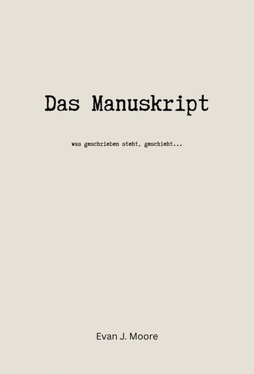

Roman
Das Manuskript
Philosophischer Mystery-Thriller aus Berlin
In einem Berliner Herbst stößt der Redakteur Adrian Kessler auf ein Manuskript, das sein Leben protokolliert, bevor es geschieht. Mit jeder Seite wird die Verzögerung zwischen Text und Realität kleiner. Ein minimalistischer Mystery-Thriller mit philosophischer Tiefe, in dem die größte Spannung im Kopf entsteht.
Jetzt erhältlich als E-Book & Taschenbuch
E-Book: ISBN 978-3-565463-95-4 · Taschenbuch: ISBN 978-3-565463-15-2